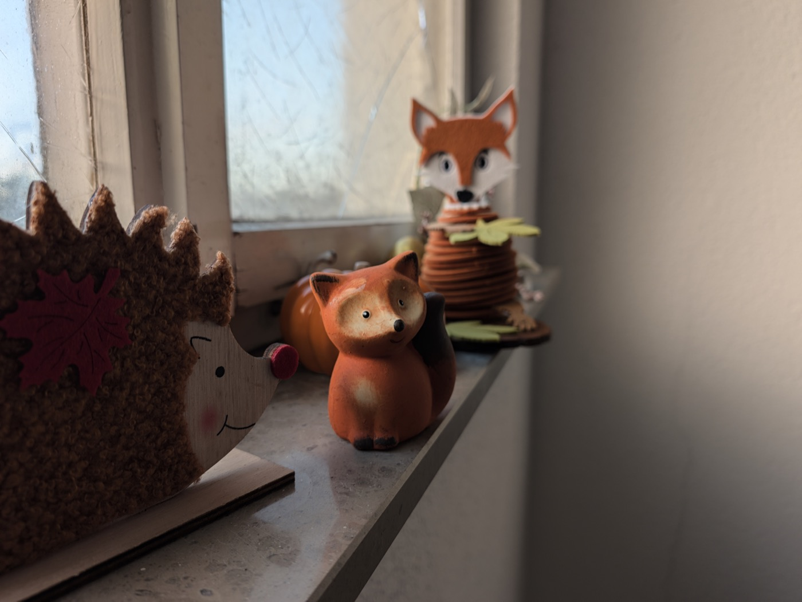
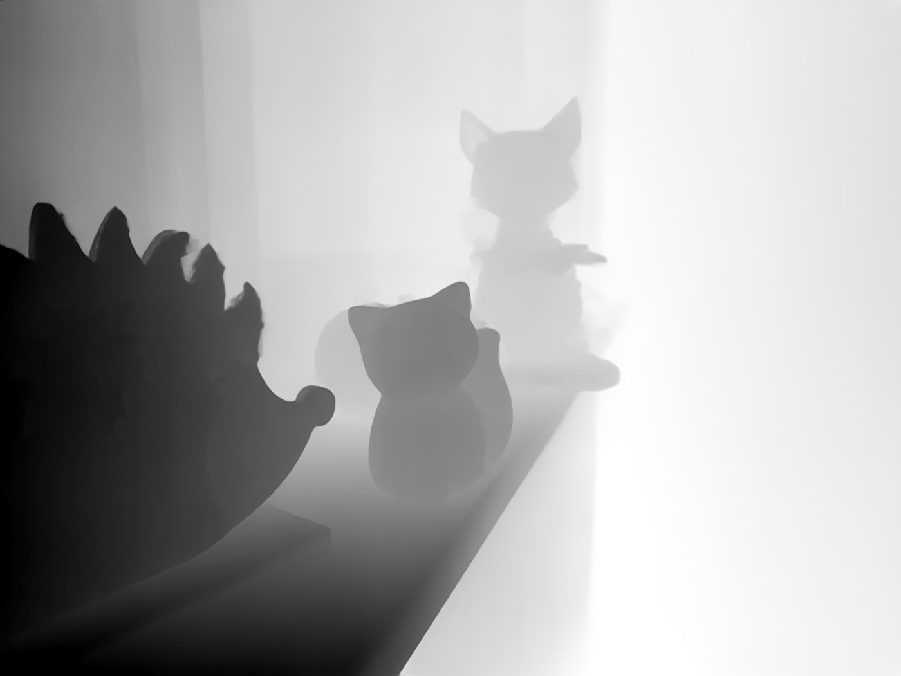
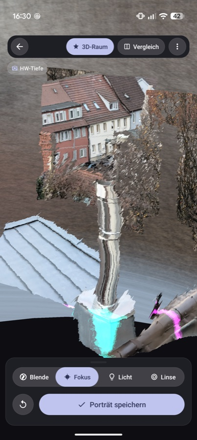
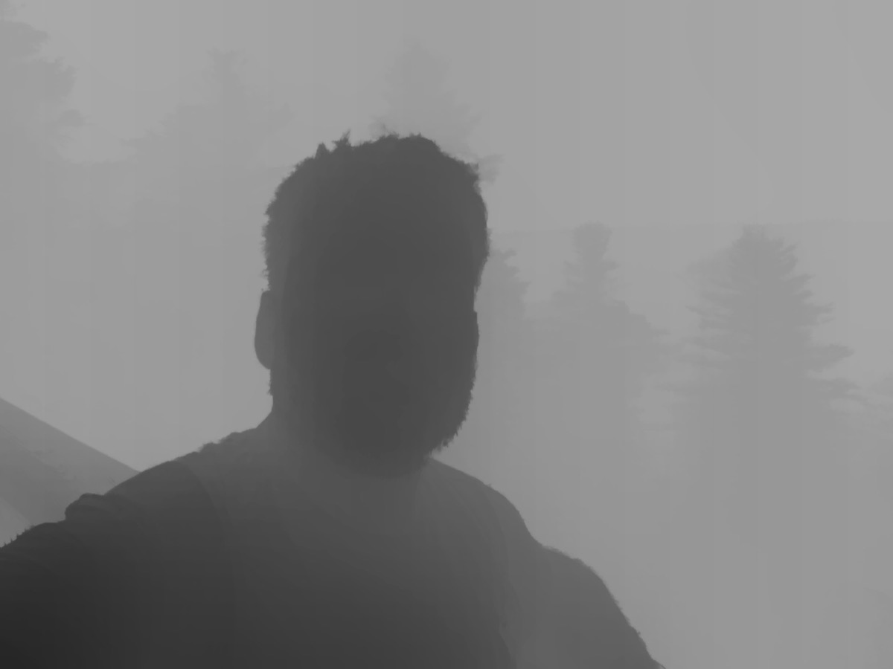
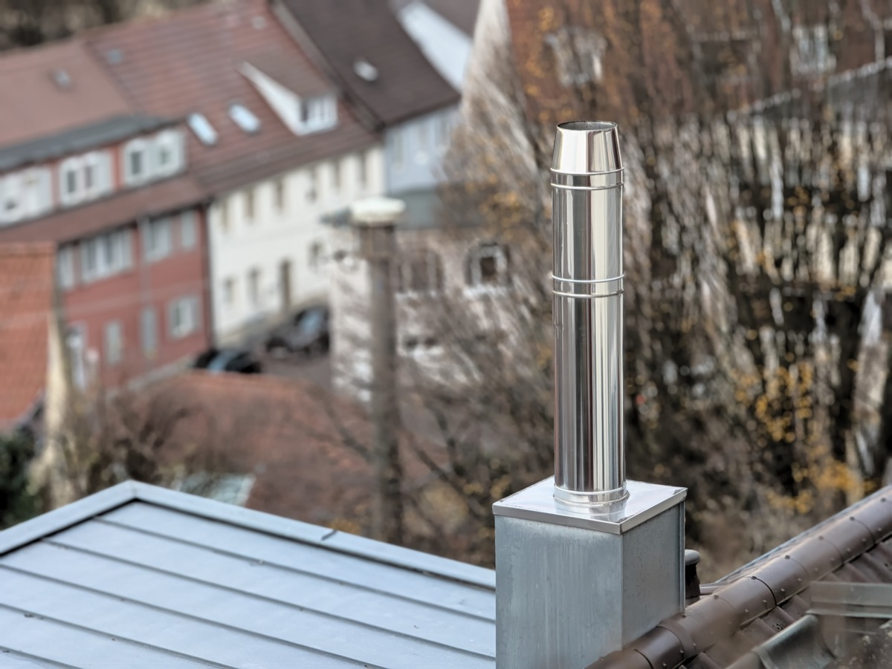
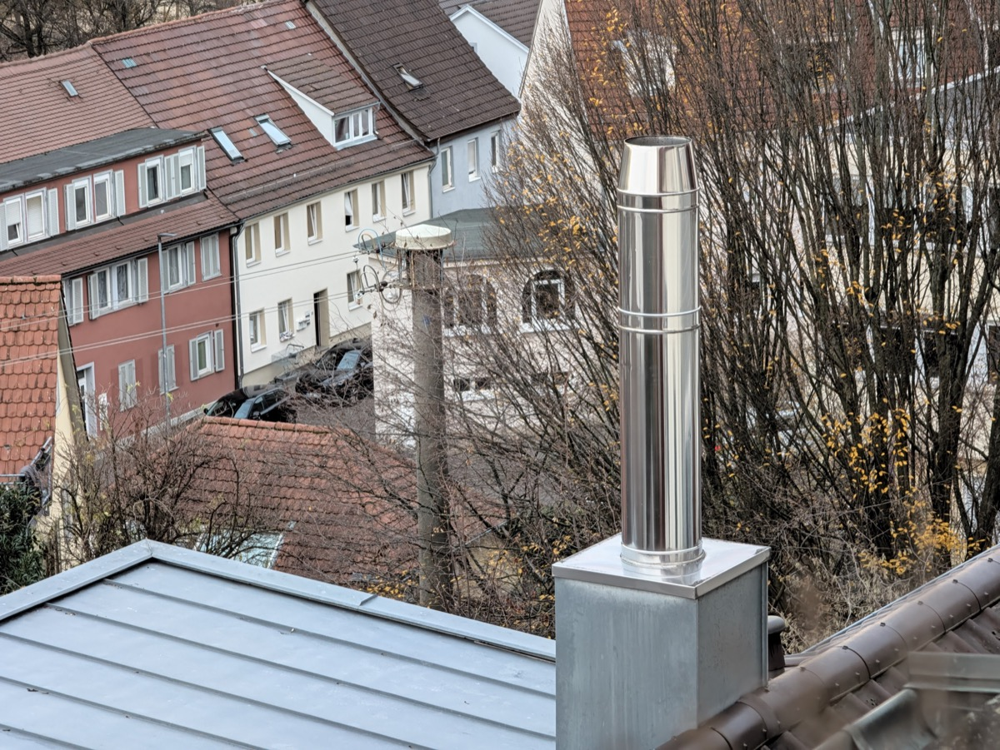

Dein Pixel speichert eine Tiefenkarte. Google Fotos ignoriert sie.
Your Pixel saves a depth map. Google Photos ignores it.
Von Pino MadeoBy Pino Madeo•21. November 202621 November 2026•Gemessen an Dateien von Pixel 10 und Pixel 11 ProMeasured on Pixel 10 and Pixel 11 Pro files
Mach ein Porträt mit einem Pixel. Schau es dir später an und entscheide, dass dir der unscharfe Hintergrund zu stark ist. Öffne Google Fotos, tippe auf Bearbeiten, Tools, Weichzeichnen, und zieh den Regler ganz nach unten auf Null.
Du bekommst kein scharfes Foto. Du bekommst das Foto mit Googles Unschärfe, fest eingebacken.
Das ist keine Beschwerde über einen Schieberegler. Es ist der Grund, warum diese App existiert — und wenn man einmal weiß, was in der Datei steckt, kann man es nicht mehr übersehen.
Was wirklich in der Datei liegt
Ein Pixel-Porträt ist kein Bild, sondern ein Behälter: Googles eigenes veröffentlichtes Format Dynamic Depth, aufgebaut auf dem GContainer-Verzeichnis in den XMP-Daten. Ich habe einen Parser über vier Aufnahmen von meinen eigenen Geräten laufen lassen. Das kam heraus:
Datei
Container-Elemente
Tiefenfelder
Pixel 10, 12 MP Porträt
Primary, GainMap, Original, Depth, Confidence
FocalTable
Pixel 10, 10 MP Selfie
Primary, GainMap, Original, Depth, Confidence
FocalTable
Pixel 11 Pro, 50 MP
Primary, GainMap, Original, Depth, Confidence
FocalTable
Galaxy S25 Ultra, 12 MP
Primary, GainMap
—
Frontkamera, Hauptkamera, 10 bis 50 Megapixel: Auf den Pixeln ist der Stapel jedes Mal derselbe. Drei Einträge verdienen einen zweiten Blick.
Depth. Eine vollständige Tiefenkarte, als eigenes JPEG in der Datei — 127 KB bei der 12-MP-Aufnahme, 1,25 MB bei 50 MP. Hier ist eine, unverändert aus einem meiner Fotos herausgelöst. Dunkel ist nah, hell ist fern.

Die Aufnahme, wie sie aus der Kamera kommt. Pixel 11 Pro, 50 Megapixel.

Dieselbe Aufnahme als Tiefenkarte, Byte für Byte aus dem Container gezogen und nur fürs Web verkleinert. Die Stacheln des Igels sind einzeln aufgelöst, der Fenstersims läuft als sauberer Verlauf nach hinten. Diese Daten liegen in jedem deiner Porträts.

Dieselbe Aufnahme in Rebokehs 3D-Ansicht, aus den Daten der Datei aufgebaut. Der Schornstein steht körperlich vor der Dachfläche, die Fassade läuft nach hinten weg. Das ist Geometrie, keine Freistellmaske — und oben links zeigt die App an, dass hier die Tiefe aus der Hardware verwendet wird.
Confidence. Eine zweite Karte, die festhält, wie sicher sich die Kamera an jeder Stelle war — also genau dort, wo die Schätzung schwierig wird und Kanten ausfransen. Google schreibt sie mit. Googles Editor bietet nichts an, was sie nutzt.

Zweites Beispiel, diesmal die 10-MP-Frontkamera: Die Haarspitzen sind erfasst, und im Hintergrund staffeln sich die Baumreihen in sauber getrennte Entfernungen. Kein Weichzeichner der Welt weiß das — die Kamera schon.
Original. Das war die Überraschung beim ersten Mal. Der Container trägt das unbearbeitete Bild in voller Auflösung, ohne jede Unschärfe — 770 KB bei 12 MP, 7,3 MB bei 50 MP. Das scharfe Foto, das du über den Editor nicht zurückbekommst, liegt in derselben Datei, die du gerade bearbeitest.

Was Google dir zeigt: die fertige Aufnahme, Unschärfe fest in den Pixeln.

Was in derselben Datei liegt: das Original-Element, scharf bis zum letzten Dachziegel.
Dazu kommt die FocalTable: die Unschärfekurve, die die Kamera bei der Aufnahme selbst verwendet hat. Keine Vermutung darüber, wie die Szene ausgesehen haben könnte, sondern die tatsächlichen Parameter.
Was Google Fotos stattdessen macht
Jetzt der Teil, der mich zum Programmieren gebracht hat. Google Fotos lässt die Unschärfe nachträglich verändern, und auf diesen Regler zeigen die Leute immer, wenn das Thema aufkommt. Aber schau, worauf er arbeitet.
Er nimmt das fertige, flachgerechnete JPEG — das, in dem Googles Unschärfe schon in den Pixeln steckt —, erzeugt mit einem KI-Modell eine neue Tiefenkarte und legt darauf eine neue Unschärfe. Zieh ihn auf Null, und du landest nicht beim Original-Element. Du landest auf dem eingebackenen Bild darunter. Ich habe das diese Woche auf einem aktuellen Pixel noch einmal geprüft.
Der Editor schätzt also maschinell Informationen, die die Kamera gemessen und ein paar Kilobyte weiter abgelegt hat. Das ist das Software-Äquivalent dazu, ein Dokument abzufotografieren, weil man die Datei nicht findet.
Snapseed, ebenfalls Google, wurde dieses Jahr wieder weiterentwickelt. Auch dessen Objektivunschärfe arbeitet nicht mit Tiefendaten.
Warum ich nicht einfach gewartet habe
2019 habe ich meine Bachelorarbeit über UX-Design für Computational Photography im Zeitalter der KI geschrieben. Dort bin ich diesem Containerformat zum ersten Mal begegnet, und damals sah die Lücke nach einem zeitlichen Problem aus: Die Daten sind da, die Werkzeuge kommen nach.
Am 27. November 2023 habe ich es bei Google gemeldet: Issue 313403359, Titel „Photos don't include depth map". Meine Beschwerde damals war genau die, die oben am Anfang steht — der Porträt-Weichzeichner lässt sich nicht auf null stellen. Der Eintrag steht bis heute auf Assigned, Priorität P2, Statusnotiz: „No update yet."
Dazwischen passierte Folgendes: Im Dezember 2025 und im Januar 2026 wurde der Eintrag intern weitergereicht. Am 6. Juni 2026 bat mich Google, das Problem auf dem neuesten Build nachzuprüfen. Das habe ich getan und am selben Tag eine dreiteilige Analyse hinterlassen. Drei Tage später kam die Antwort, man habe die Angaben an Produkt- und Entwicklungsteam weitergegeben. Am 29. Oktober 2026 wurde der Eintrag erneut weitergereicht. Stand heute: Assigned, P2, keine Änderung.
Bearbeiten zerstört die Daten
Beim Nachprüfen im Juni fand ich etwas, das schlimmer ist als bloßes Nichtbenutzen. Wenn du ein Porträt in Google Fotos bearbeitest und speicherst, werden die Dynamic-Depth-Namensräume, die FocalTable und die Containerstruktur vollständig entfernt — auch dann, wenn du ausdrücklich als Kopie speicherst.
Hier die Messung an einer solchen Kopie, bei der nur der Weichzeichner verändert wurde: Von den fünf Container-Elementen der Originaldatei sind zwei übrig, Primary und GainMap. Original, Depth und Confidence fehlen, die FocalTable ebenso. Die Datei ist dabei auf ein knappes Megabyte geschrumpft.
Google Fotos zeigt diese Kopie inzwischen trotzdem mit Porträt-Symbol an. Das macht die Sache nicht besser, sondern schlechter: Die Oberfläche behauptet weiterhin, es handle sich um ein Porträt, während die Daten dafür nicht mehr existieren. Wer dann erneut am Weichzeichner dreht, legt eine zweite geschätzte Unschärfe auf die erste.
Google Fotos erkennt das Ergebnis danach selbst nicht mehr als Porträt — das Porträt-Symbol verschwindet. Jede Möglichkeit, Schärfepunkt oder Unschärfe später noch einmal anzupassen, ist damit endgültig weg. Nicht ausgegraut, nicht versteckt: gelöscht.
Praktischer Rat, unabhängig von meiner App: Wenn dir die Tiefendaten eines Porträts etwas wert sind, bearbeite das Foto nicht in Google Fotos. Arbeite auf einer Kopie.
Damals fehlte die Tiefenkarte in den Aufnahmen tatsächlich noch. Inzwischen liegt sie in jeder Datei, wie die Tabelle oben zeigt. Geändert hat das nichts: Die Unschärfe lässt sich drei Jahre später immer noch nicht entfernen, obwohl die Daten dafür jetzt mitgeliefert werden.
Irgendwann hört Warten auf, eine Strategie zu sein. Seit dem Frühsommer baue ich deshalb an Rebokeh — nicht als Wochenendprojekt nach einer Zufallsentdeckung, sondern als Konsequenz aus mehreren Jahren, in denen sich an dieser Stelle nichts bewegt hat.
Was Rebokeh damit macht
Rebokeh liest, was ohnehin in deiner Datei liegt: die Tiefenkarte, die Confidence-Karte, die Fokustabelle und das unbearbeitete Bild. Von da an lässt sich das Foto so bearbeiten, wie es von Anfang an möglich gewesen wäre.
Blende als physikalische Größe, stufenlos von f/1.4 bis f/22, in einer 3D-Engine gerechnet statt als Weichzeichner. Lichtpunkte im Hintergrund werden zu Bokeh-Kreisen, der Verlauf folgt der gemessenen Tiefe.
Zurück zu scharf, wirklich. Weil das Originalbild im Container liegt, heißt Unschärfe entfernen: dieses Bild zeigen — keine Annäherung daran.
Umfokussieren per Fingertipp, die Schärfeebene wandert durch echte Tiefe.
Fünf Objektiv-Charaktere: sphärisch, anamorphotisch, Swirl, Vintage Soft, Mirror.
Ein Tiefenpinsel für die Stellen, an denen die Confidence-Karte ehrlich ist: Haare, Brillenbügel, der Spalt zwischen Arm und Körper.
Porträt-Relighting und ein 3D-Parallax-Live-Wallpaper aus demselben Foto.
Alles läuft auf dem Gerät. Kein Konto, kein Upload, kein Analyse-SDK — nicht als Datenschutz-Parole, sondern weil es schlicht nichts gibt, wofür ein Server nötig wäre.
Wo es schwieriger wird
Schau noch einmal auf die letzte Zeile der Tabelle. Die Datei vom Galaxy S25 Ultra trägt überhaupt keine Tiefendaten im Container. Samsung schreibt anders, andere Hersteller wieder anders, und manche Modelle schreiben gar nichts.
Für solche Fotos schätzt Rebokeh die Tiefe selbst, auf dem Gerät, und rechnet daraus — also genau das, was Google Fotos bei jedem Bild tut, nur dass Rebokeh erst dann schätzt, wenn nichts Besseres verfügbar ist. Wo die Kamera gemessen hat, gewinnt die Messung.
Das ist zugleich die ehrliche Grenze dessen, was ich im Moment versprechen kann. Ich besitze ein Pixel und ein Samsung. Jeder andere Hersteller ist eine Vermutung, bis es jemand ausprobiert — deshalb ist die App im geschlossenen Test, und deshalb frage ich ständig nach ungewöhnlichen Geräten.
Probier es mit deinen Fotos
Rebokeh ist in der geschlossenen Beta, ab Android 14. Zwei Schritte zum Mitmachen — und das Nützlichste, was du mir schicken kannst, ist ein Satz dazu, ob die App in deinen Porträts Tiefendaten gefunden hat.
Methode: Die Container-Elemente stammen aus dem XMP-GContainer-Verzeichnis unveränderter Kameradateien; die gezeigten Karten wurden byteweise aus dem JPEG gelöst und nur fürs Web verkleinert. Das beschriebene Verhalten von Google Fotos ist mein eigener Test auf einem aktuellen Pixel im November 2026.
Take a portrait on a Pixel. Look at it later and decide the background blur is too strong. Open Google Photos, tap Edit, Tools, Blur, and pull the slider all the way down to zero.
You do not get a sharp photo. You get the photo with Google's blur still baked in.
That is not a bug report about a slider. It is the reason this app exists, and once you know what is inside the file, it is hard to unsee.
What is actually in the file
A Pixel portrait is not one image. It is a container — Google's own published format, Dynamic Depth, built on the GContainer XMP directory. I ran a parser over four photos from my own devices. This is what came out:
File
Container items
Depth fields
Pixel 10, 12 MP portrait
Primary, GainMap, Original, Depth, Confidence
FocalTable
Pixel 10, 10 MP selfie
Primary, GainMap, Original, Depth, Confidence
FocalTable
Pixel 11 Pro, 50 MP
Primary, GainMap, Original, Depth, Confidence
FocalTable
Galaxy S25 Ultra, 12 MP
Primary, GainMap
—
Front camera, rear camera, 10 to 50 megapixels: on the Pixels the stack is the same every time. Three entries deserve a second look.
Depth. A full depth map, stored as its own JPEG inside the file — 127 KB on the 12 MP shot, 1.25 MB at 50 MP. Here is one, extracted unchanged from a photo of mine. Dark is close, light is far.
The photo as it comes out of the camera. Pixel 11 Pro, 50 megapixels.The same photo as a depth map, pulled byte for byte out of the container and only scaled down for the web. The hedgehog's spines are resolved individually and the windowsill recedes as a clean gradient. This sits inside every portrait you take.The same shot in Rebokeh's 3D view, built from the data in the file. The chimney physically stands in front of the roof plane and the facade recedes behind it. This is geometry, not a cut-out mask — and the badge in the corner shows the app is using the hardware depth from the file.
Confidence. A second map, recording how sure the camera was about each region — exactly where estimation gets hard and edges fray. Google writes it. Google's editor offers nothing that uses it.
A second example, this time from the 10 MP front camera: the tips of the hair are captured, and behind the subject the tree lines separate into distinct distances. No blur filter knows that. The camera did.
Original. This is the one that surprised me the first time. The container holds the unprocessed frame at full resolution, no blur applied — 770 KB on the 12 MP file, 7.3 MB at 50 MP. The sharp photo you cannot get back from the editor is sitting in the same file you are editing.
What Google shows you: the finished shot, blur baked into the pixels.What sits in the same file: the Original item, sharp down to the last roof tile.
And alongside those, a FocalTable: the blur curve the camera itself used at capture time. Not a guess about what the scene looked like. The actual parameters.
What Google Photos does instead
Here is the part that made me build an app. Google Photos does let you change the blur after the fact, and people point at that slider whenever this comes up. But watch what it operates on.
It takes the finished, flattened JPEG — the one with Google's blur already burned into the pixels — generates a new depth map with an AI model, and renders new blur on top of that. Slide it to zero and you do not land on the Original item. You land on the baked image underneath. I checked this again this week on a current Pixel.
So the editor re-estimates, by machine learning, information that the camera measured and stored a few kilobytes away. It is the software equivalent of photographing a document because you cannot find the file.
Snapseed, also Google, picked up development again this year. Its lens blur is not depth-based either.
Why I did not just wait
In 2019 I wrote my bachelor's thesis on UX design for computational photography in the age of AI. That is where I first worked with this container format, and back then the gap looked like a timing problem: the data is there, the tools will follow.
On 27 November 2023 I filed it with Google: issue 313403359, titled "Photos don't include depth map". My complaint then was exactly the one this article opens with — portrait blur cannot be set to zero. The report still sits at Assigned, priority P2, status note: "No update yet."
What happened in between: the report was passed on internally in December 2025 and again in January 2026. On 6 June 2026 Google asked me to retest the issue on the latest build. I did, and left a three-part analysis the same day. Three days later came the reply that the information had been shared with the product and engineering team. On 29 October 2026 the report was reassigned again. As of today: Assigned, P2, no change.
Editing destroys the data
While retesting in June I found something worse than mere neglect. When you edit a portrait in Google Photos and save it, the Dynamic Depth namespaces, the FocalTable and the container structure are stripped out entirely — including when you explicitly save as a copy.
Here is the measurement on such a copy, where only the blur was changed: of the five container items in the original file, two remain, Primary and GainMap. Original, Depth and Confidence are gone, and so is the FocalTable. The file shrank to just under a megabyte in the process.
Google Photos now shows that copy with a portrait badge anyway. That makes it worse, not better: the interface still claims the shot is a portrait while the data behind it no longer exists. Touch the blur slider again and you put a second estimated blur on top of the first.
Google Photos then no longer recognises its own output as a portrait — the portrait badge disappears. Any ability to adjust the focal point or blur later is gone for good. Not greyed out, not hidden: deleted.
Practical advice, regardless of my app: if the depth data in a portrait matters to you, do not edit that photo in Google Photos. Work on a copy.
Back then the depth map really was missing from the files. Today it ships with every shot, as the table above shows. That changed nothing: three years later the blur still cannot be removed, even though the data to do it now travels with the photo.
At some point waiting stops being a strategy. I have been building Rebokeh since early summer — not a weekend project after a chance discovery, but the consequence of several years in which nothing moved here.
What Rebokeh does with it
Rebokeh reads what is already in your file: the depth map, the confidence map, the focal table, and the original frame. From there the photo becomes editable the way it should have been all along.
Aperture as a physical quantity, stepless from f/1.4 to f/22, rendered in a 3D engine rather than as a blur filter. Background highlights become bokeh discs and the falloff follows measured depth.
Back to sharp, for real. Because the original frame is in the container, removing the blur means showing you that frame — not an approximation of it.
Refocus by tapping anywhere, with the focal plane moving through actual depth.
Five lens characters: spherical, anamorphic, swirl, vintage soft, mirror.
A depth brush for the places the confidence map is honest about — hair, glasses frames, the gap between arm and body.
Portrait relighting and a 3D parallax live wallpaper from the same photo.
All of it runs on the device. No account, no uploads, no analytics SDK — not as a privacy slogan, but because there is simply nothing a server would be needed for.
Where it gets harder
Look at the last row of that table again. The Galaxy S25 Ultra file carries no depth data in its container at all. Samsung writes it differently, other manufacturers differently again, and some models write nothing.
For those photos Rebokeh estimates depth itself, on the device, and renders from that — which is what Google Photos does for every photo, except that Rebokeh only falls back to estimation when nothing better is available. Where the camera measured, measurement wins.
That is also the honest limit of what I can promise right now. I own a Pixel and a Samsung. Every other manufacturer is a guess until someone tries it, which is why the app is in closed testing and why I keep asking for unusual devices.
Try it on your photos
Rebokeh is in closed beta on Android 14 and newer. Two steps to join, and the most useful thing you can send me is one sentence about whether it found depth data in your portraits.
Method: container items were read from the XMP GContainer directory of unmodified camera files; the maps shown were extracted byte-for-byte from the JPEG and only scaled down for the web. The behaviour of Google Photos described here is my own test on a current Pixel in November 2026.